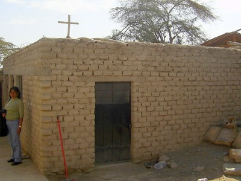
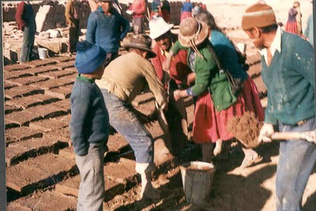
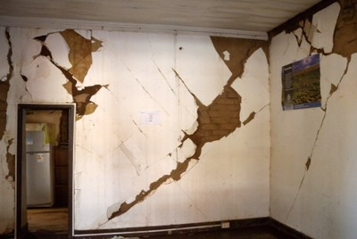
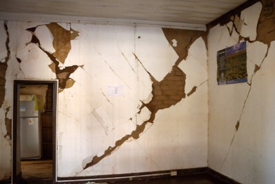

Adobe blocks [ADO]
Sun-dried (or air-dried), unfired mud (clay) masonry, where the clay is cast into blocks (and sometimes into bricks) and then laid, as opposed to walls constructed in-place out of earth, as in earth construction (cob or rammed earth). Adobe blocks can be used both in unreinforced and reinforced masonry construction. Several types of reinforcement are available, including wood, bamboo/cane, or fibre reinforcing mesh.

Adobe blocks are commonly used for single-family housing in Peru (N. Tarque)

Tw-storey adobe building in Cuzco, Peru (S. Brzev)

Adobe house, Iran (A. Bakshi, M.A.Ghannad, and M. Yekrangnia)

Adobe construction, Tajikistan (J. Niyazov)


Manufacturing of adobe blocks, Peru (left - M. Blondet) and different sizes of adobe blocks (right- S. Brzev)

Adobe blocks of different shapes and sizes, Peru (S. Brzev)

New adobe wall, Chile (S.Brzev)
 

Existing adobe buildings built in early 1900s in Chile (left) and a building damaged in the 2010 Maule earthquake (right) (S. Brzev)